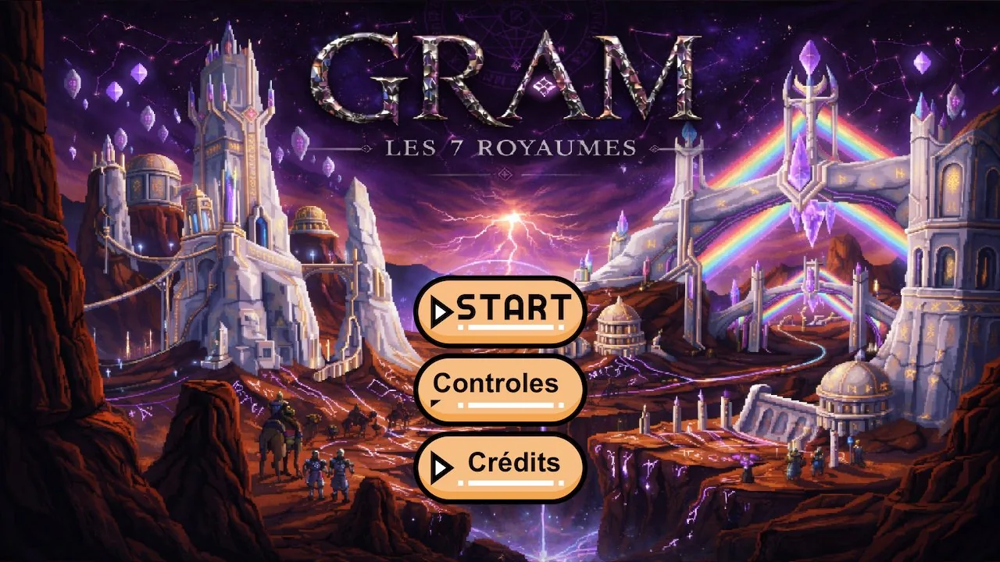
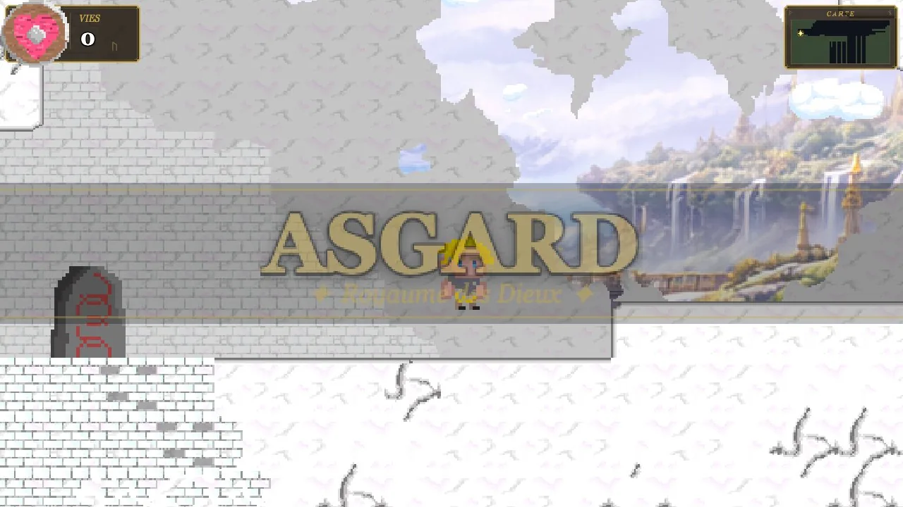

04 / 12GRAM — Les 7 Royaumes
Jeu vidéo · Phaser 3
GRAM — Les 7 Royaumes est un jeu de plateforme 2D fait avec Phaser 3, inspiré de la mythologie nordique. On y incarne Siegfried, guerrier à la nature double, chargé de traverser les sept royaumes pour reconstituer les fragments de Gram, l'épée brisée par Loki, et rétablir l'équilibre entre les mondes.
Le joueur est accompagné de deux compagnons, Thor et Loki, qui le suivent en formation grâce à un système d'enregistrement de position à retardement — chaque personnage rejoue les déplacements du précédent avec un léger délai, sans script de trajectoire préétabli.
Chaque royaume existe en deux versions, recto et verso, entre lesquelles on bascule via des portails : une mécanique de monde-miroir qui redessine la carte, les ennemis et les obstacles. S'y ajoutent un système de combat avec projectiles et temps de recharge, des ennemis et un boss avec leur propre IA, des objets à collecter, des clefs et des cryptes à ouvrir, ainsi qu'un écran-titre, un synopsis, un mode histoire et des crédits.
Ce projet m'a fait travailler la logique de jeu pure : machine à états entre les scènes (menu, histoire, carte recto/verso, victoire, défaite), physique arcade (gravité, sauts, collisions), IA d'ennemis et de boss, et un fichier de configuration externe qui permet d'ajuster la difficulté sans toucher au code.
